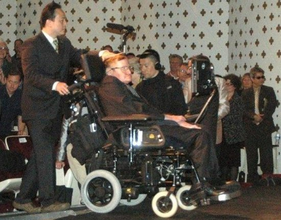
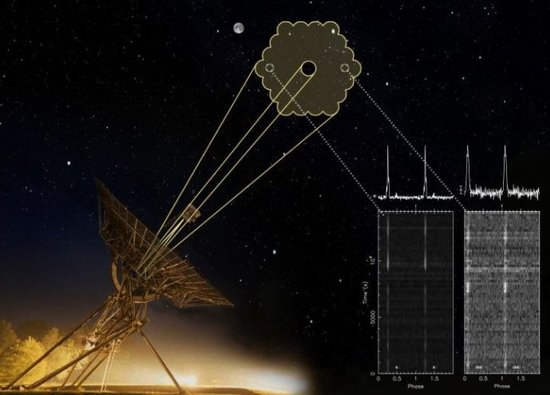
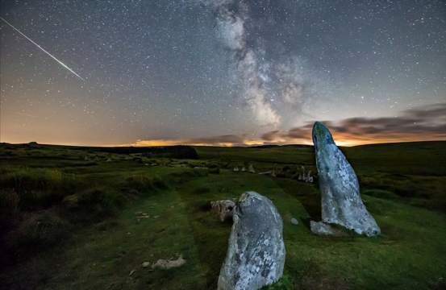
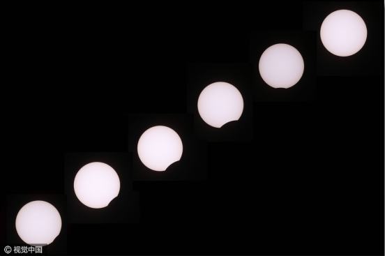
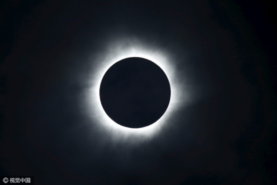
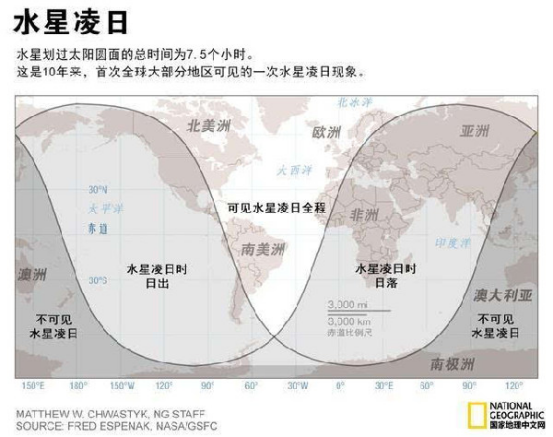

头条
霍金表示：未来1000年人类必须进入太空生活

霍金在加州理工学院进行演讲
等待的人们排起了四分之一英里长的队伍这些宇宙论认为宇宙没有开始，也没有结束，星系不断地形成聚拢宇宙物质，创造出新的天体，而恒星爆发后又将物质元素释放到宇宙空间中，进入新的循环。但是霍金认为这样的理论无法得到空间望远镜最新观测发现的支撑，在20世纪80年代，他和物理学家罗杰·彭罗斯共同证明了当宇宙开始收缩时就无法扭转结束的结局。宇宙大爆炸后时间出现了起点，即导致时间出现的事件可能只发生一次，目前的宇宙年龄为138亿年，比过去认为的有所提高。对此，约翰·保罗二世教皇则发布通告反对科学对上帝创世一刻的研究，因为这是神圣的事件。

荷兰韦斯特博克综合孔径射电望远镜的观测视场，是满月面积的30倍以上，安装了新的接收器后，大大提升了观测能力
4月17日火星在心宿二附近，在天空由顺行改为逆行，又远离心宿二；5月22日火星冲日，并在6月30日留，后改为顺行，8月24日前后，火星与心宿二再次接近，从而形成了本年的“荧惑守心”的天象，此后，火星将不再逗留，一路远行。

“荧惑守心”就是火星“合”心宿二。火星被称为“荧惑”，心宿二被称为“大火星”。两“火”相遇，红光满天，古人称这种天象为“荧惑守心”。火星和心宿二“相遇”只是一种视觉现象。火星距离地球较近，而心宿二距离地球很远。因此，它们的相遇只不过是在视线方向上的接近，并没有真正接近。

12日午夜以后，云层散去，月亮落下，蔚蓝色的夜空中，英仙座流星雨开始“登场”。流星雨一直持续到13日3时，后来由于云层开始增多，能看到的流星逐渐变少。
由于受到木星引力影响，英仙座流星雨今年极大时的每小时天顶流量高于往年，达到150—160颗。
9日发生这次日食，全食的可视时间最长的位置在太平洋当中，时间持续可达4分9秒。在亚洲东南部和极东北部、印度洋东北部、大洋洲北部、北美洲极西北部可以看到偏食。中国黄河以南的大部分地区可以观测到食分不等的偏食，且越往南食分越大。

英仙座流星雨的形成，是因为地球的运行轨道与斯威夫特·塔特尔彗星轨道相交，流星体受地球引力的影响，以每小时13万英里(约21万千米)的速度闯进地球大气层并且燃烧，而燃烧时所产生的火焰亮光，就是人们看到的流星雨。根据历史记录，英仙座流星雨每小时会出现50-75个流星体。

北京时间9日19时12分左右，本世纪第三次“水星凌日”天象在天穹如约上演。由于日落时间较晚，我国新疆、西藏等西部地区的天文爱好者观测到了凌日的开始阶段，目睹到了水星如一颗小黑痣从太阳“脸上”缓慢爬过的罕见景象。
